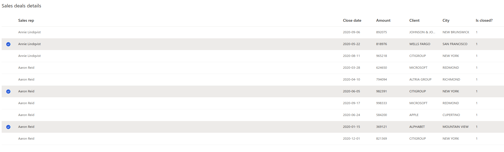
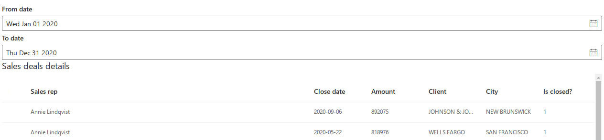
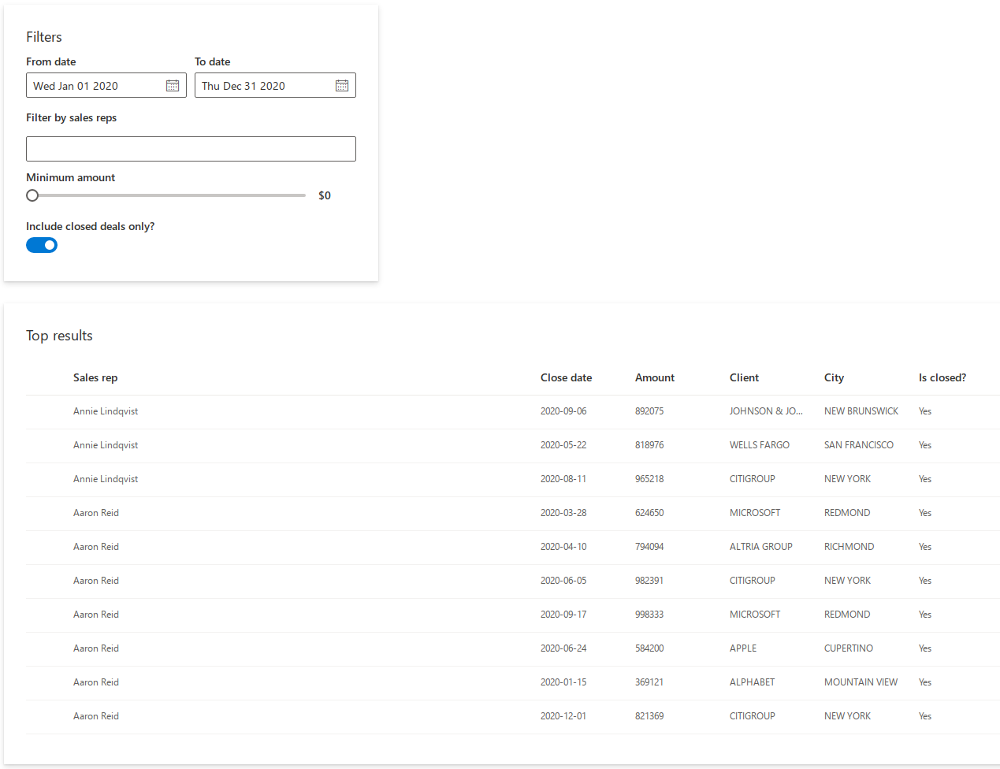
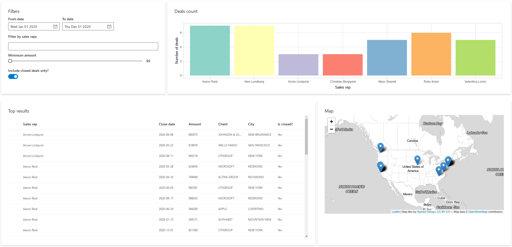

Tutorial: Create your first shiny.fluent dashboard
Source:vignettes/shiny-fluent.Rmd
shiny-fluent.RmdLet’s learn shiny.fluent by building an example app.
In this tutorial, we’ll build a basic application for analysing sales results data. The app will allow for filtering the data, and viewing it on a plot, on a map and in a table.
We’ll assume that you have Shiny and
shiny.fluent already
installed.
shiny.fluent “Hello world!” app
Let’s start by creating an app that shows “Hello world!”, but does
this with Fluent UI. First, we need to load
shiny.fluent.
That gives us all we need to run a basic application! To create a UI
showing a welcome message, we will use a Fluent component named
?Text. We’ll put it in a ?fluentPage, which
will add proper CSS classes and suppress Bootstrap (you should not use
both Bootstrap and Fluent UI at the same time).
ui <- fluentPage(
Text(variant = "xxLarge", "Hello world!")
)
server <- function(input, output, session) {}
shinyApp(ui, server)Let’s see what our app looks like right now.
Yay! It may not look very impressive, but this text is rendered in Shiny with the whole power of Fluent UI and React.
Showing data in a table
Let’s now grab some data and show it to our users in a table. shiny.fluent already includes some example data that we can use.
fluentPeople is a list of imaginary people in a format
expected by some Fluent components.
fluentPeople %>% glimpse()
#> Rows: 7
#> Columns: 11
#> $ key <dbl> 1, 2, 3, 4, 5, 6, 7
#> $ imageUrl <chr> "https://static2.sharepointonline.com/files/fabric/offic…
#> $ imageInitials <chr> "PV", "AR", "AL", "RK", "CB", "VL", "MS"
#> $ text <chr> "Annie Lindqvist", "Aaron Reid", "Alex Lundberg", "Roko …
#> $ secondaryText <chr> "Senior Sales Rep", "Sales Rep", "Junior Sales Rep", "Se…
#> $ tertiaryText <chr> "In a meeting", "In a meeting", "In a meeting", "In a me…
#> $ optionalText <chr> "Available at 4:00pm", "Available at 4:00pm", "Available…
#> $ isValid <lgl> TRUE, TRUE, TRUE, TRUE, TRUE, TRUE, TRUE
#> $ presence <dbl> 2, 6, 4, 1, 2, 2, 3
#> $ canExpand <lgl> NA, NA, NA, NA, NA, NA, NA
#> $ color <chr> "#8DD3C7", "#FFFFB3", "#BEBADA", "#FB8072", "#80B1D3", "…fluentSalesData is a data frame of randomly generated
“sales deals”, which are assigned to one of the
fluentPeople, have a date and an amount, and are associated
with one of the top 10 companies from the Fortune 500 list (including
its name, city and map coordinates).
fluentSalesDeals %>% glimpse()
#> Rows: 100
#> Columns: 30
#> $ X <dbl> -8286952, -13595427, -13625773, -13595427, -8286952, -8234…
#> $ Y <dbl> 4938582, 6047180, 4550281, 6047180, 4938582, 4976415, 4938…
#> $ FID <dbl> 493, 234, 425, 234, 493, 333, 493, 284, 333, 284, 425, 234…
#> $ OBJECTID <dbl> 493, 234, 425, 234, 493, 333, 493, 284, 333, 284, 425, 234…
#> $ RANK <dbl> 35, 28, 25, 28, 35, 21, 35, 26, 21, 26, 25, 28, 28, 21, 21…
#> $ NAME <chr> "JOHNSON & JOHNSON", "MICROSOFT", "WELLS FARGO", "MICROSOF…
#> $ ADDRESS <chr> "1 JOHNSON AND JOHNSON PLAZA", "1 MICROSOFT WAY", "420 MON…
#> $ ADDRESS2 <chr> "NOT AVAILABLE", "NOT AVAILABLE", "NOT AVAILABLE", "NOT AV…
#> $ CITY <chr> "NEW BRUNSWICK", "REDMOND", "SAN FRANCISCO", "REDMOND", "N…
#> $ STATE <chr> "NJ", "WA", "CA", "WA", "NJ", "NY", "NJ", "NC", "NY", "NC"…
#> $ ZIP <chr> "08933", "98052", "94163", "98052", "08933", "10017", "089…
#> $ COUNTY <chr> "MIDDLESEX", "KING", "SAN FRANCISCO", "KING", "MIDDLESEX",…
#> $ EMPLOYEES <dbl> 126400, 114000, 269100, 114000, 126400, 243355, 126400, 20…
#> $ REVENUES <dbl> 71890, 85320, 94176, 85320, 71890, 105486, 71890, 93662, 1…
#> $ LATITUDE <dbl> 40.49804, 47.64005, 37.79340, 47.64005, 40.49804, 40.75598…
#> $ LONGITUDE <dbl> -74.44296, -122.12980, -122.40240, -122.12980, -74.44296, …
#> $ SOURCE <chr> "MANUAL", "BING MAPS", "BING MAPS", "BING MAPS", "MANUAL",…
#> $ PRC <chr> "ON-ENTITY", "ADDRESS", "ADDRESS", "ADDRESS", "ON-ENTITY",…
#> $ COUNTYFIPS <chr> "34023", "53033", "06075", "53033", "34023", "36061", "340…
#> $ COMMENTS <chr> "NOT AVAILABLE", "NOT AVAILABLE", "NOT AVAILABLE", "NOT AV…
#> $ WEBSITE <chr> "HTTPS://WWW.JNJ.COM/", "HTTPS://WWW.MICROSOFT.COM/EN-US/"…
#> $ PROFIT <dbl> 16540, 16798, 21938, 16798, 16540, 24733, 16540, 17906, 24…
#> $ deal_amount <dbl> 855987, 753174, 702208, 590190, 405443, 714723, 455713, 80…
#> $ rep_id <int> 1, 1, 1, 1, 1, 1, 1, 1, 1, 1, 1, 1, 1, 2, 2, 2, 2, 2, 2, 2…
#> $ rep_name <chr> "Annie Lindqvist", "Annie Lindqvist", "Annie Lindqvist", "…
#> $ date <date> 2020-02-19, 2020-08-18, 2020-10-14, 2020-02-23, 2020-10-1…
#> $ client_name <chr> "JOHNSON & JOHNSON", "MICROSOFT", "WELLS FARGO", "MICROSOF…
#> $ city <chr> "NEW BRUNSWICK", "REDMOND", "SAN FRANCISCO", "REDMOND", "N…
#> $ color <chr> "#8DD3C7", "#8DD3C7", "#8DD3C7", "#8DD3C7", "#8DD3C7", "#8…
#> $ is_closed <int> 0, 1, 0, 0, 0, 0, 0, 1, 0, 0, 0, 0, 1, 0, 0, 1, 1, 1, 0, 1…We now need a Fluent component to insert a table. A good way find a
component that suits our needs is to launch the showcase dashboard with
shiny.fluent::runExample("dashboard") or to visit the official
Fluent UI docs. Browsing through the list of components, we find
?DetailsList, which gives a table component with rich
configuration options.
First, we need to define which columns from our deals data we want to see and how to label them.
details_list_columns <- tibble(
fieldName = c("rep_name", "date", "deal_amount", "client_name", "city", "is_closed"),
name = c("Sales rep", "Close date", "Amount", "Client", "City", "Is closed?"),
key = fieldName)Let’s now display our sales deals in a table. As we plan to later
make the table change dynamically, we put it in a regular Shiny
uiOutput. Let’s also assume that for now we want to filter
out deals that have is_closed equal to 1.
ui <- fluentPage(
uiOutput("analysis")
)
server <- function(input, output, session) {
filtered_deals <- reactive({
filtered_deals <- fluentSalesDeals %>% filter(is_closed > 0)
})
output$analysis <- renderUI({
items_list <- if(nrow(filtered_deals()) > 0){
DetailsList(items = filtered_deals(), columns = details_list_columns)
} else {
p("No matching transactions.")
}
Stack(
tokens = list(childrenGap = 5),
Text(variant = "large", "Sales deals details", block = TRUE),
div(style="max-height: 500px; overflow: auto", items_list)
)
})
}
shinyApp(ui, server)In addition to ?DetailsList and ?Text, in
the code above we used ?Stack, which arranges elements in
its area.

Adding filtering
Okay, that already looks good! But it’s hard to explore these data without some filtering options - let’s add that now. We will start by adding an option to find transactions between selected dates.
We will use two ?DatePicker components to allow users to
choose a date range. To make the selected dates available in the server
function, we have two options:
- The simple way. Use the
DatePicker.shinyInputconvenience wrapper, which provides an interface analogous to vanilla Shiny inputs:inputIdand optionalvalue. - The advanced way. Use the component directly and connect it to Shiny
using its React interface:
onSelectDateanddefaultValuein this case.
The second option is less convenient but might provide more power and flexibility in some cases. We’ll go with the first option in this tutorial, as the simplified interface is sufficient for our needs.
filters <- tagList(
DatePicker.shinyInput("fromDate", value = as.Date('2020/01/01'), label = "From date"),
DatePicker.shinyInput("toDate", value = as.Date('2020/12/31'), label = "To date")
)Let’s add the filters to our UI:
ui <- fluentPage(
filters,
uiOutput("analysis")
)In the server function of our application, we can now access the input values using the IDs we provided in the same way as with any other Shiny input. Let’s use the selected dates to apply additional filtering to the deals:
server <- function(input, output, session) {
filtered_deals <- reactive({
req(input$fromDate)
filtered_deals <- fluentSalesDeals %>% filter(
date >= input$fromDate,
date <= input$toDate,
is_closed > 0
)
})This is what our application looks like now:

More filters
Let’s add more filtering options to our app! We will use the following components:
-
?NormalPeoplePickerto limit the search to selected sales representatives, -
?Sliderto define a minimum deal size, -
?Toggleto show only the closed deals.
In addition we’ll use ?Stack and ?Label to
visually arrange the filtering controls.
filters <- Stack(
tokens = list(childrenGap = 10),
Stack(
horizontal = TRUE,
tokens = list(childrenGap = 10),
DatePicker.shinyInput("fromDate", value = as.Date('2020/01/01'), label = "From date"),
DatePicker.shinyInput("toDate", value = as.Date('2020/12/31'), label = "To date")
),
Label("Filter by sales reps", className = "my_class"),
NormalPeoplePicker.shinyInput(
"selectedPeople",
class = "my_class",
options = fluentPeople,
pickerSuggestionsProps = list(
suggestionsHeaderText = 'Matching people',
mostRecentlyUsedHeaderText = 'Sales reps',
noResultsFoundText = 'No results found',
showRemoveButtons = TRUE
)
),
Slider.shinyInput("slider",
value = 0, min = 0, max = 1000000, step = 100000,
label = "Minimum amount",
valueFormat = JS("function(x) { return '$' + x}"),
snapToStep = TRUE
),
Toggle.shinyInput("closedOnly", value = TRUE, label = "Include closed deals only?")
)Now that we have multiple filtering controls, it would be a good idea to add some visual separation between them and the table. Let’s define a helper function to create Fluent UI cards:
makeCard <- function(title, content, size = 12, style = "") {
div(
class = glue("card ms-depth-8 ms-sm{size} ms-xl{size}"),
style = style,
Stack(
tokens = list(childrenGap = 5),
Text(variant = "large", title, block = TRUE),
content
)
)
}Now we can wrap the filters in a call to makeCard().
Additionally, we include a style tag to add some padding
and margin to the cards created by our helper function.
ui <- fluentPage(
tags$style(".card { padding: 28px; margin-bottom: 28px; }"),
makeCard("Filters", filters, size = 4, style = "max-height: 320px;"),
uiOutput("analysis")
)Let’s move our attention to the server function. We can access the values of the filtering controls using the provided IDs just like before.
server <- function(input, output, session) {
filtered_deals <- reactive({
req(input$fromDate)
selectedPeople <- (
if (length(input$selectedPeople) > 0) input$selectedPeople
else fluentPeople$key
)
minClosedVal <- if (isTRUE(input$closedOnly)) 1 else 0
filtered_deals <- fluentSalesDeals %>%
filter(
rep_id %in% selectedPeople,
date >= input$fromDate,
date <= input$toDate,
deal_amount >= input$slider,
is_closed >= minClosedVal
) %>%
mutate(is_closed = ifelse(is_closed == 1, "Yes", "No"))
})Finally, let’s refactor the table output and wrap it in a card.
makeCard("Top results", div(style="max-height: 500px; overflow: auto", items_list))Our filtering is much more useful now!

More outputs
We are not limited to shiny.fluent components - we can seamlessly use
other libraries in our app! Let’s add a Plotly plot and a Leaflet map.
We start by adding a plotlyOutput() to our UI:
ui <- fluentPage(
tags$style(".card { padding: 28px; margin-bottom: 28px; }"),
Stack(
tokens = list(childrenGap = 10), horizontal = TRUE,
makeCard("Filters", filters, size = 4, style = "max-height: 320px"),
makeCard("Deals count", plotlyOutput("plot"), size = 8, style = "max-height: 320px")
),
uiOutput("analysis")
)We also add a leafletOutput() to the UI generated in the
server function:
Stack(
tokens = list(childrenGap = 10), horizontal = TRUE,
makeCard("Top results", div(style="max-height: 500px; overflow: auto", items_list)),
makeCard("Map", leafletOutput("map"))
)Now we can add the following code to the server function to render a bar chart and a map:
output$map <- renderLeaflet({
points <- cbind(filtered_deals()$LONGITUDE, filtered_deals()$LATITUDE)
leaflet() %>%
addProviderTiles(providers$Stamen.TonerLite, options = providerTileOptions(noWrap = TRUE)) %>%
addMarkers(data = points)
})
output$plot <- renderPlotly({
p <- ggplot(filtered_deals(), aes(x = rep_name)) +
geom_bar(fill = unique(filtered_deals()$color)) +
ylab("Number of deals") +
xlab("Sales rep") +
theme_light()
ggplotly(p, height = 300)
})Look at our dashboard now!
